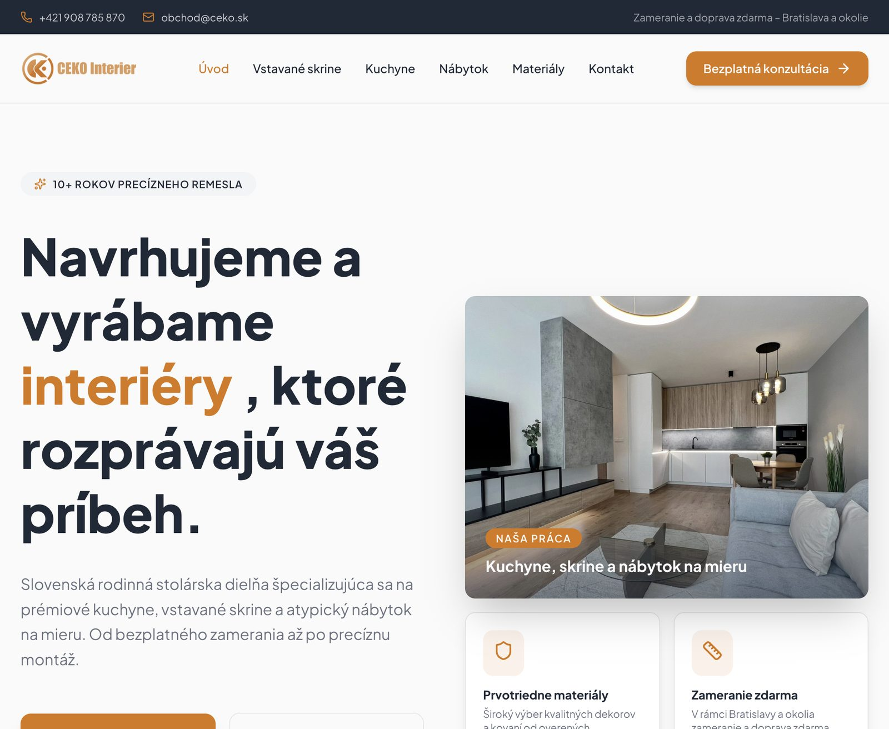
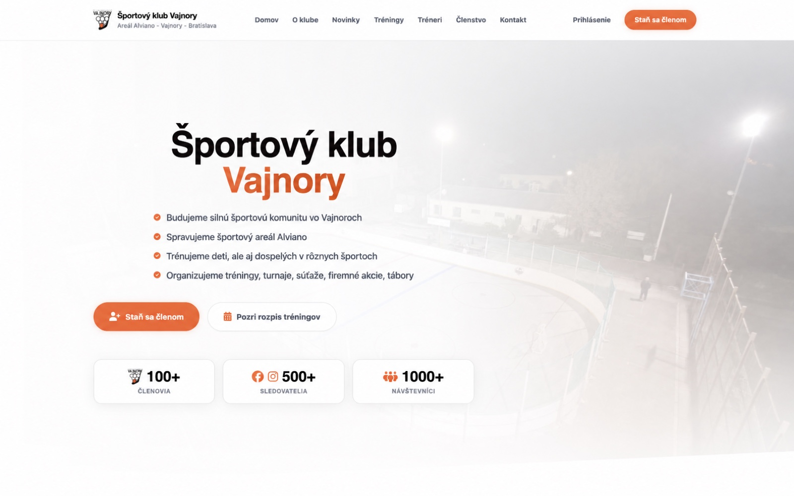
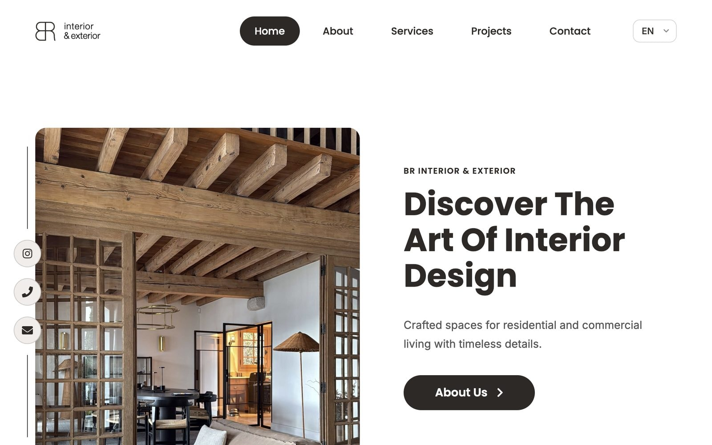

CeKo Interier
Webové sídlo · Interiéry na mieruVýsledokModerná prezentácia stolárskej dielne so silným hero, jasnými službami (kuchyne, vstavané skrine, nábytok) a jednoduchou cestou k bezplatnej konzultácii. Live: ceko.sk
Referencie
Funkčné webové sídla a produkty vytvorené pre konkrétny biznisový cieľ — nie obrázky do portfólia.

VýsledokModerná prezentácia stolárskej dielne so silným hero, jasnými službami (kuchyne, vstavané skrine, nábytok) a jednoduchou cestou k bezplatnej konzultácii. Live: ceko.sk

VýsledokKomunitný web pre hokejbal a areál Alviano — členstvo, tréningy, tréneri a kontakt na jednom mieste. Čitateľná štruktúra pre rodičov aj dospelých hráčov. Live: skvajnory.sk

VýsledokPrémiové viacjazyčné sídlo pre európske stolárske a dizajnové štúdio — služby, projekty a proces od konceptu po montáž. Live: brinteriorexterior.netlify.app
Poďme z neho spraviť niečo, čo funguje — rovnako priamo a bez zbytočných medzičlánkov.
Nezáväzne prebrať projekt →